In today's musical landscape—which is largely dominated by hip-hop, bro country, dance-pop, and EDM—it
can be easy to forget about the existence of a genre such as Progressive Rock. After all, it has been
several decades since it has been at the musical forefront, and the nature of music streaming and social
media—which both often incentivizes albums to have longer track lists with shorter songs and more immediate
hooks in order to gain any sort of salient traction—make it difficult for such a genre to thrive nowadays.
However, as an enjoyer of most kinds of music, I cannot help but feel a bit dismayed when a certain genre
doesn't get the attention it deserves, even if they are obviously not all equally accessible. Personally,
this is especially the case with Progressive Rock since it is actually my favorite genre of music.
Even if it is not as accessible as today's most popular generes, I am still a strong believer in the notion
that—contrary to popular belief—most people can get into most kinds of music provided that they put in the
time and effort required for their ears to get attuned to it. Thus, I have created this guide in order to
further facilitate the process of getting any curious souls accustomed to Progressive Rock music.
But before I delve into the essential albums, I believe we ought to define exactly what Progressive Rock is.
I'm sure most people can gather by the name alone that it is a sub-genre of Rock music as a whole, but in
order to specify how exactly it differs from more well-known kinds of Rock music, I think it is worth establishing
what comprises Rock music as a whole.
Though genre divisions are obviously hotly debated—since there is no real way to evenly divide something so fluid—I
believe that Rock can be divided into 3 main sub-genres: Classic Rock, Progressive Rock, and Alternative Rock. Classic
Rock is essentially an umbrella term for all pre-prog and pre-punk styles of Rock, such as Rock n' Roll, Rockabilly, Folk
Rock, Hard Rock, Blues Rock, Psychedelic Rock, etc. Alternative Rock is essentially an umbrella term for all sub-genres
born from the DIY ethos of punk, such as classic Punk Rock, Post-Punk, Hardcore Punk, Post-Hardcore, Emo, Grunge, Shoegaze,
etc.
Progressive Rock, then, is an umbrella term for styles of Rock that draw large influence from outside of Rock itself in
order to add an extra layer of complexity to the music. These mainly come from Classical music, Jazz music, early
(i.e. pre-Synthpop) Electronic music , and Traditional Folk music (as opposed to Contemporary Folk, which is what forms
the backbone of Folk Rock). As a result of these extra influences, the songs are often longer, the compositions more
complex, the instrumentation more diverse, and the skill required to play the songs higher. In fact, it is not uncommon
for Progressive Rock songs to exceed 10 or even 20 minutes in length and include instruments not commonly found in Rock
songs, e.g. analog synthesizers, violins, flutes, saxophones, etc.
Progressive Rock can trace its origins to southern England in the mid-to-late 1960's when musicians with classical and/or
jazz backgrounds wanted to take the formula initiated by Psychedelic Rock and push the envelope further by adding even
more styles into the mix. Bands such as The Beatles and The Moody Blues arguably did many things to lay the groundwork
for Progressive Rock without releasing any music that could directly be called it, but in my opinion, the two true creators
of Progressive Rock would be Robert Fripp and Keith Emerson. The latter would create some of the first examples of
classical and jazz-influenced keyboard-oriented Rock with The Nice—in which his inspiration from Jimmy Smith and Aaron
Copland are immediately apparent—and the former would do the same for the guitar when forming King Crimson.
Now below lies the various levels for getting into Prorgessive Rock. You can click on the heading of each section to contract
or expand it (just in case you don't want to scroll a lot).
Level 1: The 3 Starter Albums
So now that we have established exactly what Progressive Rock is, it begs the question of where exactly one starts
in order to best get into it. I believe that, naturally, one ought to start with albums released towards the beginning of
the genres's lifespan in order to better gain an appreciation for how it grew and evolved over time upon subsequent
listens. Furthermore, they should be as accessible as possible so that the genre as a whole can be more welcoming towards
newcomers. After much deliberation, I have devised that the best 3 starter albums for getting into Progressive Rock are as
follows:
The Court of the Crimson King by King Crimson (released in 1969)
Aguably the first Progressive Rock album ever, no collection would be complete without it. Even though it is
probably the least accessible out of this bunch of 3 albums, it is still essential listening simply because
it was the wellspring from which all other Progressive Rock music came. All of the typical elements that would
come to characterize the genre are present, from the jazziness of the first track, the symphonic touch of the
mellotron on the remaining tracks, the precence of instruments such as flute and saxophone, and even a couple of
songs that break the 10-minute mark.
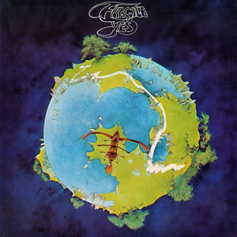
Fragile by Yes (released in 1971)
This is easily one of the most iconic and easily-recognizable Progressive Rock albums, and some elements of it may
even be familiar to non-prog fans. Whether it's the intro of the first track Roundabout—which even became a meme several
years ago—or the easily distinctive style of Roger Dean's cover art, there's sure to be something from this album that
some people will know, even if they didn't know that it originated from here. Furthermore, the more melodic and
"symphonic" style makes it a relatively accessible listen, and it does help that there is only one song here that exceeds
10 minutes in length.
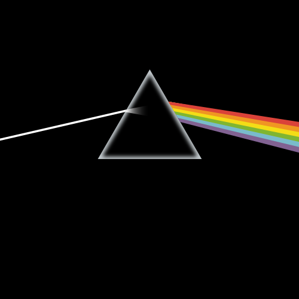
The Dark Side of the Moon by Pink Floyd (released in 1973)
This one is also sure to be instantly-recognizable to many, as the album art is among the most iconic in all of music.
I'm sure that most people are also familiar with the name of Pink Floyd, since even then, they were by far the most popular
and commercially successful Progressive Rock band out there. In fact, many people aren't even aware that their 70's output
constitutes as Progressive Rock. However, upon closer inspection, I believe that this fact becomes very apparent, especially
when one considers the long, complex arrangements and electronic textures that were completely missing from the Classic Rock
bands that Pink Floyd is often lumped together with.
(Note: henceforth, the albums listed within each "level" will be done so in the chronological order of their release, but they
can be listened to in whatever order you like, just as long as all of the level 1 albums are listened to before all of the
level 2 albums, all of the level 2 albums are listened to before all of the level 3 albums, etc.)
Level 2: More Essential Classics
Even though the 3 albums above are what I cosider to be the ideal primer into Progressive Rock, there are still plenty of great
albums to listen to within the genre once you have become more familiarized. Even though they are not the most essential
or the most accessible, they are still classics among Progressive Rock fans, and thus make the perfect albums to listen
if you liked the first 3 and want more. They are as follows:
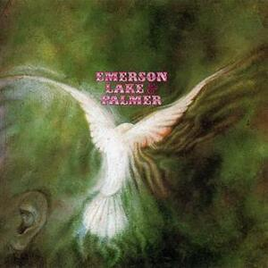
Emerson, Lake, & Palmer by Emerson, Lake, & Palmer (released in 1970)
It goes without saying that Progressive Rock—and Rock music as a whole—is largely guitar-oriented, but Emerson, Lake, &
Palmer is one of those few bands that exists as the exception. Centered around the keyboard playing of the aforementioned
Keith Emerson and the singing of former King Crimson vocalist Greg Lake, their songs seldom ever feature guitar parts.
However, this serves to make them all the more unique, and their debut album is undoubdtedly an essential for its
pedigree (even if their music isn't as compositionally or lyrically strong as many of their contemporaries).
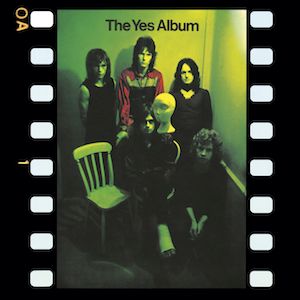
The Yes Album by Yes (released in 1971)
Coming just a few short months before Fragile was this album, which features a sound that was still proggy, but with
some melodies that resembled the traditional Rock of the time. Though I believe it to be less essential than Fragile,
it is still essential enough to be featured here for those who crave more of this sound. Steve Howe's guitar work
really comes at the forefront of this album.
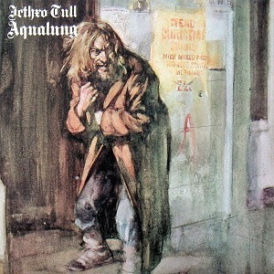
Aqualung by Jethro Tull (released in 1971)
Jethro Tull differs greatly from the other of the big first-wave English Progressive Rock bands in that their sound
has far more folky elements than their peers; as such they are often dubbed "Progressive Folk". Their arrangements
contain far more acoustic guitar throughout, and it's not uncommon for their songs to have melodies that sound
reminiscient of English or Celtic Folk music. In spite of this, the electric parts of their songs are still quite heavy,
arguably even heavier than most of the bands in their cohort.
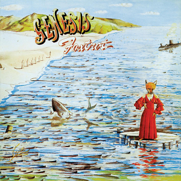
Foxtrot by Genesis (released in 1972)
Genesis is a band that may sound familiar to some, but most would most likely know them for their poppy 80's output under
the leadership of Phil Collins. However, up until 1977, they were a Progressive Rock band, and for most of that time, they
were fronted by Peter Gabriel (who would later release the hit album So in 1986). Early Genesis's sound is very reminiscient
of Yes, to the point that the two bands are often brought up together in Progressive Rock discussions. In spite of that,
anyone can find upon closer inspection that Genesis has plenty of their own to offer, from Gabriel's lower-register vocals
to Steve Hackett's heavier guitar sound. Foxtrot is especially a staple of their discography since it ends with Supper's Ready,
which is often seen as the gold standard for 20+ minute album closers.
Larks' Tongues in Aspic by King Crimson (released in 1973)
Even though they spearheaded the genre, King Crimson actually had a very tumultuous existence, as they were subject to frequent
lineup changes that occured between virtually every album they released (with mastermind Robert Fripp being the only consistent
member). This also led to frequent changes to their sound, which can easily be seen in this album, which is far heavier and more
dissonant than their debut release. All the same, it is still an essential because the dramatic sonic shift that came with this
album would go on to influence countless bands in the future who wanted to specifically emulate this style.
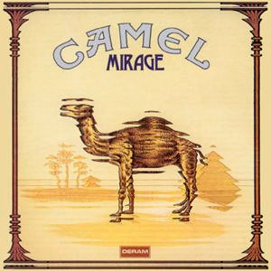
Mirage by Camel (released in 1974)
Even though Camel were somewhat late to the game when it came to Progressive Rock releases—this was only their sophomore effort—they
have still managed to cement themselves as a classic mainstay of the genre with fans. Though their style is very reminiscient of Yes
and Genesis, they still made themselves uniqe by prioritizing instrumental songs over vocal songs and using synthesizers more than
other keyboard instruments, resulting in a more electronic sound.
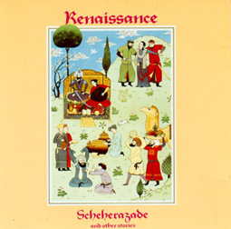
Scheherazade and Other Stories by Renaisannce (released in 1974)
Similarly to Jehtro Tull, Renaisannce was a band that incorporated more acoustic elements into their sound, but unlike Jethro Tull, they
were still more symphonically-oriented instead of folk-oriented. In order to achieve this, they often had a full string section—and
sometimes even a full orchestra—playing alongside the band. Furthermore, they also have a female vocalist, unlike the other bands in this
list.
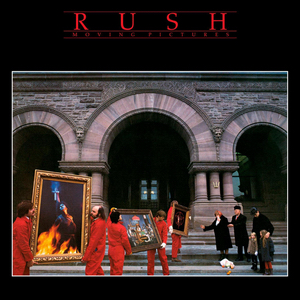
Moving Pictures by Rush (released in 1981)
Even though it may seem odd that we are fast-forwarding through time so much just for one album, it's simply because no discussion of
Progressive Rock is complete without Rush. Unlike the other bands mentioned thus far, they are actually Canadian, and thus did not
adopt the Progressive Rock sound until it had time to properly propagate and gain momentum outside of England. In spite of being so late
to the game—they didn't release a Progressive Rock album until 1975—they still managed to become a mainstay due their uniquely heavier sound
and extremely virtuosic lineup. Even though it is not one of their first albums, Moving Pictures is still the best one to start out with, as
a few of the songs therein may be familiar to some.
Level 3: The Classic Masterpieces
It is without a doubt that the albums previously discussed are great and make for ideal starting material when getting into Progressive Rock.
However, in the grand scheme of all genres, only a select few can be regarded as true masterpieces. In my opinion, the albums that follow are
among some of the greatest albums ever made, and most Progressive Rock fans would agree (at least with most of the albums here). One could
hypothetically start with these, but I am a strong believer in the notion that starting with an artist's or a genre's best does a disservice
to the rest of the artist's/genre's repertoire; saving them for later, then, allows one to better appreciate what makes them so great. So,
without further ado, here are the masterpieces of Progressive Rock:
Close to the Edge by Yes (released in 1972)
The #1 highest rated album on progarchives.com and my personal favorite album of all time, the brilliance of Close to the Edge as
both the band's and arguably the whole genre's apex cannot be understated. After releasing several albums, this truly feels like the
culmination of everything Yes has been working towards up to that point, perfectly synthesizing their lush instrumentation, mystical
lyricism, and dynamic composition. It truly does feel like lightining in a bottle as well since this was last Yes album to feature
original drummer Bill Bruford—he would later join King Crimson and get replaced by Alan White—and original keyboardist Rick Wakeman—he
would later get replaced by Patrick Moraz. As a result, this is really the last time we see the original lineup's perfect chemistry.
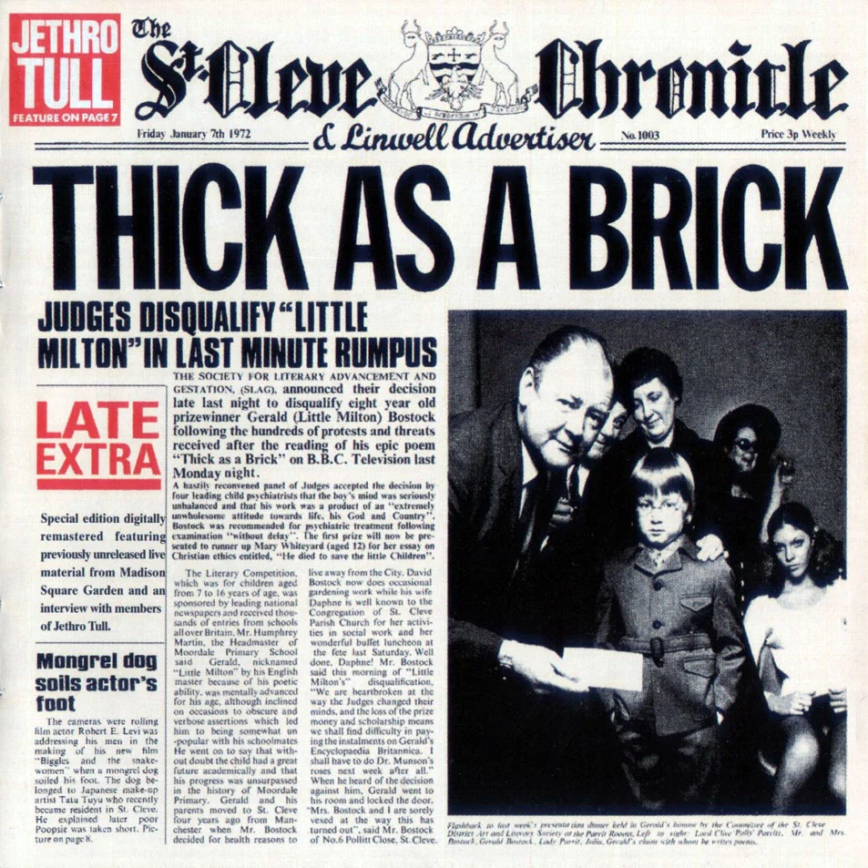
Thick as a Brick by Jethro Tull (released in 1972)
Absurdly long songs were already a mainstay of Progressive Rock by this point, but Jethro Tull decided to take the idea even further here
and make this album a single album-length song. Clocking in at 43 minutes and 50 seconds, the song is so long that it couldn't fit on a
single side of a vinyl record, so it is often heard split in half. However, in doing this, it's clear to see the insane amount of ambition
that songwriter Ian Anderson had here, and they were able to meet that ambition in spades. The band perfectly blends the deeper allegorical
elements of the album with a witty, Monty Python-inspired humor that proved that an album didn't need to be 100% serious in order to be a
masterpiece.
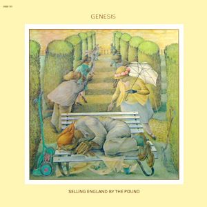
Selling England by the Pound by Genesis (released in 1973)
I had always found Peter Gabriel to be on the lyrically stronger side of the Progressive Rock songwriter spectrum, which is often helped by
his clever allusions to mythology and literature. However, it truly reaches an all-time high here, as he instead uses this album as a space to
comment on the English identity crisis during the post-colonialist era. When one couples that with melodies that are more melodic and wistful
than what the band was accustomed to up to this point, it is clear that this was their most poignant album yet. And with insane highs like The
Cinema Show and Firth of Fifth—the latter of which being one of my favorite songs of all time—it was apparent that this would be a difficult act
for them to follow.
Red by King Crimson (released in 1974)
I had previously mentioned the tumultuous existence that King Crimson endured in the wake of their seminal debut album. In the midst of that tumult,
They would eventually find themselves dwindle down to a measly trio in 1974, one year before the band would go on hiatus. Now, one would assume that
this would be the band's lowest point, but instead, they proved everyone wrong by releasing their magnum opus. It's hard to say if this is a direct
result of having so few core members here, but the songs feel the most focused that they've felt since King Crimson's debut, and they even manage to
capture every great thing that King Crimson managed to do since their conception, from the heavy instrumental opener of Red—which calls back to Larks'
Tongues in Aspic—to the melancholic jazz trumpet of Fallen Angel—which calls back to Islands—to the extended avant-garde instrumentation of Providence—which
is very reminiscient of Moonchild—to the epic, mellotron-driven drama of the closing track Starless (which also happens to be the #1 highest rated song on
rateyourmusic.com).
Wish You Were Here by Pink Floyd (released in 1975)
For music reccomendations, I personally use 4 different websites: rateyourmusic.com, besteveralbums.com, progarchives.com, and albumoftheyear.org. On all 4
of these sites, there is only 1 album that consistently appears on the top 5, and that is Wish You Were Here. If that alone doesn't speak volumes about this
album's quality and its nigh-universal acclaim, then I don't know what else possibly could. The album doubles as both a middle finger to the music industry—which
is always a welcome sight—and an homage to former band member Syd Barrett; both of these things make this album especially personal for the band, and that becomes
very clear when one hears how passionate the performances are, from the saxophone solo on Shine on You Crazy Diamond to the nostalgia-tinged vocals on the title
track. This is truly what it looks like when one of the best bands of all time is firing on all cylinders.
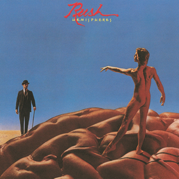
Hemispheres by Rush (released in 1978)
Though I had previously reccomended Moving Pictures as a starting point for Rush's discography, it becomes apparent fairly quickly that there are a decent amount
of pop sensibilities on that record, or at least more than one would expect on a Progressive Rock album (not that that is an inherently bad thing, of course). Rush
had already been adding some more accessible elements to their music for a few years up to that point, but before that, they reached the pinnacle of their "proginess"
with this album. Along with Peter Gabriel, I strongly believe that Neil Peart is one of Progressive Rock's strongest lyricists—and probably the most underrated lyricism
of all time—and this album represents the perfect balance between his poetic lyricism and the virtuosic compositions of bandmates Alex Lifeson and Geddy Lee. When one
considers that along with the soaring guitars, plush synthesizers, punchy bass, and dizzying drums, it all adds up to the best of everything that Rush has to offer as a band.
Level 4: Intro to Neoprog, Progressive Metal, & Modern Progressive Rock
Among people who already know of this genre's existence but are not necessarily fans, Progressive Rock is often erroneously seen as an
artifact of the 1970's and its various self-indulgent musical trends. Those same people would then think that it simply got swept under
the tide of musical progress as it was inevitably "replaced" by styles such as Punk, New Wave, and Synthpop. However, that could not be
further from the truth. Even if Progressive Rock music isn't as popular or as trailblazing as it was upon the first decade of its inception,
there are still countless bands that have been carrying the torch ever since the first wave ended in the late 70's.
To demonstrate the various flavors of Progressive Rock that have developed, I will list one Neoprog, two Progressive Metal, and two Modern
Progressive Rock albums below. Because most new bands admittedly have the tendency to be extemely derivate of the classic bands that I have
already mentioned, I believe that these 5 bands represent the few who did manage to break new ground within Progressive Rock, and they are:
Script for a Jester's Tear by Marillion (released in 1983)
It's hard to pin down exactly what distinguishes Neoprog from other styles of Progressive Rock, but it is at least easy to
distinguish in that it was a relatively small and isolated movement in the Progressive Rock timeline. Between the late 70's
and late 80's, Progressive Rock very much experienced a "dark age" of sorts in which almost all of the first-wave bands had
either disbanded or hopped on the bandwagon of whatever genre was new or trendy. As such, there was a considerably large void
that would only get filled by a few bands, such as Marillion or IQ. These bands would get dubbed "Neoprog" for this reason, and
are primarily characterized by an updated, "eighties" version of the original Progressive Rock sound. In my opinion, Script for
a Jester's Tear is the ideal starter album in Neoprog due to it being relatively early in Marillion's discography but still very
much focused, and Marillion as a whole is often used to represent Neoprog since they enjoyed the most immediate success.
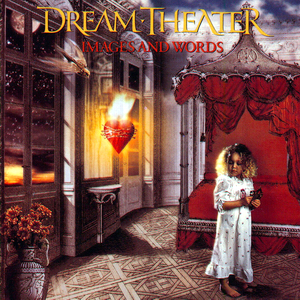
Images and Words by Dream Theater (released in 1992)
Progressive Metal is pretty easy to define: it's simply the Progressive Rock formula applied to a Metal context instead of a Rock
context. However, the exact origins of Progressive Metal are hotly debated, as it is hard to pin down exactly when this
fusion of styles first took place. Personally, I think it can first be traced back to side 2 of Iron Maiden's 1984 album Powerslave,
in which they finally applied their influences from Rush, Genesis, and Jethro Tull to the heavy metal music that they were already
playing. The first dedicated Progressive Metal bands would then come in the form of Fate's Warning, Queensrÿche, and Dream Theater,
and Dream Theater is often considered to be the best of that first wave for their sheer staying power and commitment to the purity of
the genre. Out of their early works, Images and Words is often hailed as the best, so it is usually given as the perfect starting point
for Progressive Metal.
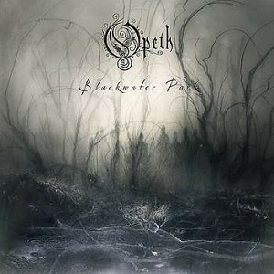
Blackwater Park by Opeth (released in 2001)
Opeth is a band that definitely won't be for everyone, even with all the quirks of the other bands I have mentioned thus far. This is
due to their incorporation of Death Metal—and by extension, harsh death growl vocals—into the pre-existing Progressive Metal formula.
What really makes them interesting, though, is the dynamism that they employ between these heavy death-metal-laden passages and the
soft acoustic passages that often follow. Over time, this has become Opeth's trademark, and it has even managed to attract quite a few
people who would not normally be into extreme metal. Then, due to the production talents of Porcupine Tree's Steven Wilson, Blackwater
Park is often given as Opeth's essential album.
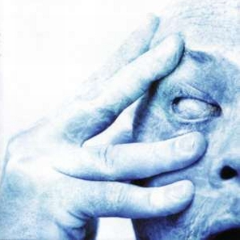
In Absentia by Porcupine Tree (released in 2002)
Even though Steven Wilson's friendship with Opeth's Mikael Åkerfelt let to the aforementioned production of some of Opeth's albums by
Wilson, he decided to keep his own band strictly within a Rock context. However, upon listening to anything from their discography, it
becomes clear pretty quickly that this is not a simple rehashing of the 70's Progressive Rock formula. Rather, it takes the most
fundamental elements of that sound and updates it for the modern world, with Hard Rock riffs that match the sound of the 90's and 2000's
and even some spacey elements that sound reminiscient of OK Computer-era Radiohead. In Absentia then presents itself as an ideal starting
point in their discography due to containing all of the sonic elements that make them unique without giving away some of the all-time-high
moments of their career that can be found on Deadwing and Fear of a Blank Planet.
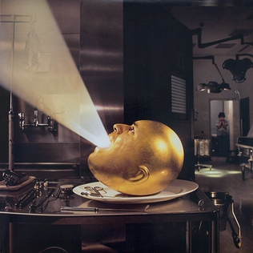
De-Loused in the Comatorium by The Mars Volta (released in 2003)
By the time they formed The Mars Volta in the early 2000's, songwriting duo Cedric Bixler-Zavala and Omar Rodríguez-López had already had
experience playing a wide variety of kinds of Rock music, especially with their Post-Hardcore band At the Drive-In. Since The Mars Volta was
formed immediately following the wake of that band's downfall, it was only natural that their flavor of Progressive Rock would contain many
Post-Hardcore elements in it. However, they still bring the whole slew of other eclectic influences under their belt to this Band's sound,
covering everything from Classic Rock to various styles of Latin American music. Overall, this makes De-Loused in the Comatorium quite the unique
listen.
Beyond: Related Genres
Thus concludes my primer for Progressive Rock Music. I believe that the order in which I listed these albums makes for the easiest transition into incorporating
this genre of music to your regular listening cycle, and I hope that it motivates further exploration into bands, albums, and subgenres that I neglected to mention
here. Furthermore, if you are curious about similar genres, there are a few out there that have that same ethos, even if there are enough differences in the sound
to warrant calling them different genres:
Jazz Fusion: This genre is exactly what it sounds like: jazz fused with other genres, most commonly Rock and Funk. It came about at around the
same time as Progressive Rock and with very similar intentions in mind, but since it arose within the Jazz community instead of the Rock community, it still ended
up sounding quite different from its brother genre. The origins of Jazz Fusion can be traced to 1968 when already-legendary Jazz trumpeter and bandleader Miles Davis
started becoming concerned that Jazz was becoming less popular among young people, who seemed to now be favoring Rock and Funk. At that same time, his then-girlfriend
Betty Mabry got him into Jimi Hendrix and Sly & The Family Stone, which motivated him to incorporate their styles into his own music. This led him to release both
Miles in the Sky and Filles de Kilimanjaro that same year, which sparingly featured Rock and Funk elements. Then, one year later, he would fully take the plunge with
In a Silent Way, which would become so impactful that it would single-handedly kill the bop era of Jazz and kick off the Fusion era. Any thing from The Mahavishnu
Orchestra, Return to Forever, or Miles Davis' 1969-1975 run are fair game or getting into Jazz Fusion.
Krautrock: As the semi-derogatory name suggests, Krautrock is a style of Rock that started in Germany, namely in the late 60's. It was characterized
by building upon the already-established Psychedelic Rock formula—just like Progressive Rock—but with adding an avant-garde spin along with early electronic textures
that also resulted in songs that were longer, but with more repitition. Krautrock and Classic Progressive Rock are so similar, the former is sometimes considered to
be a subgenre of the latter. However, that still strongly depends on who you ask. Unlike Classic Progressive Rock, Krautrock takes more influence from Contemporary
Classical music and non-European folk music as its basis, resulting in a less familiar—and thus less accessible—sound. It was also highly influential in its own right,
with other prominent musicians of the time like David Bowie or Brian Eno being avid fans.
Post-Rock/Math Rock: I am lumping these two genres together because it is so common for bands to do both, but they are still denotatively different, so
I'll define each separately here. Post-Rock is a difficult to define genre, but it is often described as a style that involves using Rock instrumentation in pursuits of
non-Rock sounds. Personally, I think it is better described as ambient/atmospheric/minimalist Rock, in which the songs feature a typical guitar-bass-drums outfit but with
structures that eschew pop sensibilities in lieu of extended passages that prioritize texture or atmosphere. From this alone, I'm sure that it already sounds very similar
to Progressive Rock in that it aims to elevate rock from the typical three-minute verse-chorus structure, but the instrumental timbres and compositions are far more
stripped-down. Mogwai and Sigur Rós are probably the two most accessible Post-Rock bands, but my personal favorite is Godspeed You! Black Emperor.
Math Rock then shares Progressive Rock's prioritization of instrumental virtuosity and odd time signatures, but like Post-Rock, the instrumentation is far more stripped-down.
As a result, it focuses on core instrumental Rock timbres, but with a more "mathematical" sound due to the aforementioned odd time signatures and angular melodies. Bands like
Fall of Troy, Slint, and Drive like Jehu fuse Math Rock with Post-Hardcore while others like American Football and Toe will fuse it with Midwest Emo for a more somber sound.
Toe also frequently incorporates Post-Rock into their sound, but at a smaller scale.
Tech-Death/Mathcore: For those who are drawn to the more technical/virtuosic aspect of Progressive Rock and can also stand the death growls of bands like Opeth,
Technical Death Metal—abbreviated as Tech-Death—and Mathcore are the perfect genres to explore. The former is essentially a subset of Death Metal that prioritizes technical skill
and instrumental virtuosity. Due to the more off-kilter melodies that arise from this, Tech-Death songs tend to be less eerie than classic Death Metal songs and thus usually explore
deeper lyrical themes such as philosophy or environmentalism to accompany those melodies (as opposed to the slasher horror-type lyricism found in classic Death Metal). Any of the
Florida Tech-Death bands from the 90's are fair game for starters, but Death is easily the best of the bunch in my opinion.
Mathcore then applies that same technical framework to Metalcore as a foundation, which in and of itself is a combination of extreme Metal and Hardcore Punk. Because of the punky
aspect of this genre, it seldom includes guitar solos, but the instrumental virtuosity of the musicians is still on full display throughout the entire song. Converge, Botch, and The
Dillinger Escape Plan are the 3 bands I would recommend for this subgenre.